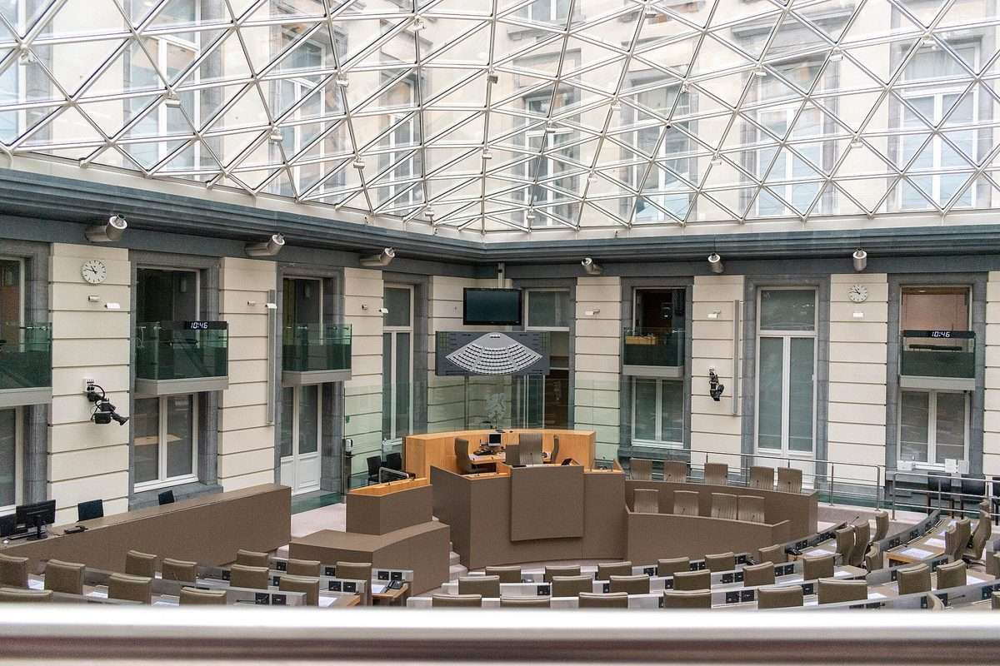

벨기에 플랑드르, 저소득 가구 태양광 설치 동행 지원 중단…난방설비 동행 지원과 합쳐 300만 유로 절감

에너지·기후 장관 2027 정책·예산 설명서에서 밝혀…건당 700유로·평균 6시간으로 5kWp 설치 돕던 에너지하우스 업무, 에너지 빈곤 계획 2030과 방향 엇갈려
벨기에 플랑드르 정부가 지역 에너지 상담창구인 에너지하우스(Energiehuizen)가 저소득 가구의 태양광 설치를 곁에서 도와 온 동행 지원을 중단한다. 멜리사 드프라테러(Melissa Depraetere, Vooruit) 플랑드르 에너지·기후 장관은 2027 에너지·기후 정책·예산 설명서에서 2027년 1월 1일부터 난방설비 정비 동행 지원 재원을 없애고 "취약 가구의 태양광 설비 동행 지원도 중단한다"고 밝혔으며, 두 지원을 합쳐 300만 유로를 절감하는 것으로 예산에 반영됐다. 태양광 동행 지원은 주거 개보수 보조금(Mijn VerbouwPremie)의 최저 소득 구간 가구가 대상이었고, 에너지하우스는 지금까지 수백 건을 맡아 건당 700유로를 받고 평균 6시간을 들여 평균 5kWp 설비 설치를 도왔다. 에너지하우스의 일반 상담 기능은 그대로이며, 에너지하우스에 주는 전체 보조금은 2027년 1월부터 올해보다 495만 유로 늘고 2031년까지 연장돼 집단 개보수 사업을 넓히는 데 쓰인다. 정부는 이와 함께 전기 축열 난방을 지속가능 난방으로 바꾸는 가구 지원에 200만 유로를 재배정하고, 2027년 임대인 대상 개보수 동행 지원을 시작하며, 2028년 1월 1일까지 모든 지자체에 주거·에너지 통합창구를 두기로 했다. 그러나 이번 결정은 정부가 에너지 빈곤 계획 2030에서 저소득 가구의 재생에너지·히트펌프 접근을 수단으로 내걸고, 지난여름 플러그인 배터리·태양광이 에너지 빈곤 완화에 도움이 되는지 검토하겠다고 밝힌 방향과 엇갈린다.
시민에너지 관점
건당 700유로, 평균 6시간이면 저소득 가구 한 곳에 평균 5kWp의 태양광을 달 수 있었다는 숫자는, 가난한 가구가 태양광에서 밀려나는 이유가 돈만이 아니라 정보와 절차의 벽이라는 점을 보여 준다. 재정 사정상 300만 유로 절감은 불가피하다는 반론이 나올 수 있지만, 같은 정부가 에너지하우스 전체 보조금은 495만 유로 늘려 집단 개보수로 옮겨 가는 만큼 문제는 돈의 크기보다 저소득 가구의 몫을 어디에 담느냐다. 가구마다 따로 설치를 돕는 방식은 예산이 줄면 가장 먼저 끊기지만, 마을이나 단지가 함께 소유하는 발전소에 저소득 가구의 몫을 처음부터 넣어 두면 지원 사업이 끝나도 배당은 이어진다. 우리도 에너지 복지를 가구별 설치 지원에만 맡기지 말고, 공동 소유 발전 사업의 지분과 수익 일부를 저소득 가구에 배정하는 구조부터 만들어야 한다.
출처: Solar & Storage Magazine 2026-10-28 Edwin van Gastel 원문 보기
ベルギー・フランデレン、低所得世帯の太陽光設置への伴走支援を打ち切り…暖房設備の伴走支援と合わせ300万ユーロ削減
エネルギー・気候相が2027年の政策・予算説明書で表明…1件700ユーロ・平均6時間で5kWpの設置を支えてきたエネルギーハウスの業務、エネルギー貧困計画2030と方向が食い違う
ベルギー・フランデレン政府は、地域のエネルギー相談窓口であるエネルギーハウス（Energiehuizen）が低所得世帯の太陽光設置に寄り添って支えてきた伴走支援を打ち切る。フランデレンのメリッサ・デプラテレ（Melissa Depraetere、Vooruit）エネルギー・気候相は、2027年のエネルギー・気候政策・予算説明書で、2027年1月1日から暖房設備の保守に関する伴走支援の財源をなくし、「脆弱な世帯の太陽光設備の伴走支援も打ち切る」と明らかにし、両支援を合わせて300万ユーロの削減が予算に盛り込まれた。太陽光の伴走支援は住宅改修補助金（Mijn VerbouwPremie）の最低所得層の世帯が対象で、エネルギーハウスはこれまで数百件を扱い、1件あたり700ユーロを受け取って平均6時間をかけ、平均5kWpの設備設置を支援してきた。エネルギーハウスの一般相談機能は維持され、エネルギーハウスへの補助金全体は2027年1月から今年より495万ユーロ増え、2031年まで延長されて集団改修事業の拡大に充てられる。政府はあわせて、電気蓄熱暖房から持続可能な暖房への切り替えを支援する200万ユーロを再配分し、2027年に賃貸人向けの改修伴走支援を始め、2028年1月1日までにすべての自治体に住宅・エネルギーの統合窓口を置くとした。しかし今回の決定は、政府がエネルギー貧困計画2030で低所得世帯の再生可能エネルギー・ヒートポンプへのアクセスを手段に掲げ、この夏にはプラグイン蓄電池・太陽光がエネルギー貧困の緩和に役立つか検討すると表明した方向と食い違う。
市民エネルギーの視点
1件700ユーロ、平均6時間で低所得世帯1軒に平均5kWpの太陽光を付けられたという数字は、貧しい世帯が太陽光から取り残される理由がお金だけでなく、情報と手続きの壁にあることを示している。財政事情から300万ユーロの削減はやむを得ないとの反論もありうるが、同じ政府がエネルギーハウスへの補助金全体を495万ユーロ増やして集団改修へと軸足を移す以上、問題はお金の大きさより、低所得世帯の取り分をどこに組み込むかだ。世帯ごとに個別に設置を支える方式は予算が減れば真っ先に切られるが、集落や団地が共同で所有する発電所に低所得世帯の取り分を最初から組み込んでおけば、支援事業が終わっても配当は続く。韓国でもエネルギー福祉を世帯別の設置支援だけに任せず、共同所有の発電事業の持ち分と収益の一部を低所得世帯に割り当てる仕組みから作るべきだ。
出典: Solar & Storage Magazine 2026-10-28 エドウィン・ファン・ハステル（Edwin van Gastel） 原文を読む
比利时弗拉芒停止为低收入家庭安装光伏提供陪同支持…与供暖设备陪同支持合计削减300万欧元
能源与气候部长在2027年政策与预算说明中宣布…能源之家每件获700欧元、平均用6小时协助安装5kWp光伏的业务被取消，与2030能源贫困计划方向相悖
比利时弗拉芒政府将停止由地方能源咨询窗口"能源之家"（Energiehuizen）为低收入家庭安装光伏提供的全程陪同支持。弗拉芒能源与气候部长梅丽莎·德普拉特雷（Melissa Depraetere，Vooruit党）在2027年能源与气候政策及预算说明中表示，自2027年1月1日起取消供暖设备维护陪同支持的经费，"弱势家庭的光伏设备陪同支持也将停止"，两项支持合计300万欧元的削减已列入预算。光伏陪同支持的对象是住房改造补贴（Mijn VerbouwPremie）中最低收入档的家庭，能源之家迄今已处理数百件，每件获得700欧元，平均花费6小时，帮助安装平均5kWp的设备。能源之家的一般咨询功能保持不变，政府给能源之家的整体补贴自2027年1月起比今年增加495万欧元，并延长至2031年，用于扩大集体改造项目。政府还重新调配200万欧元，支持家庭把电蓄热供暖换成可持续供暖，2027年启动面向房东的改造陪同支持，并计划在2028年1月1日前让所有市镇都设立住房与能源综合窗口。然而，这一决定与政府在《2030能源贫困计划》中把低收入家庭获得可再生能源和热泵列为手段、今年夏天又表示要研究插电式电池和阳台光伏能否缓解能源贫困的方向相悖。
市民能源视角
每件700欧元、平均6小时就能为一户低收入家庭装上平均5kWp光伏，这组数字说明，贫困家庭被挡在光伏门外，不只是因为缺钱，还因为信息和手续的门槛。有人可能会说，财政紧张下削减300万欧元在所难免，但同一政府把能源之家的整体补贴增加495万欧元、转向集体改造，可见问题不在钱的多少，而在于把低收入家庭的份额放在哪里。逐户协助安装的方式一遇预算缩减就最先被砍，而如果从一开始就在村庄或社区共同拥有的电站中为低收入家庭留出份额，即使扶持项目结束，分红也会持续。韩国也不应只把能源福利寄托在逐户安装补贴上，而应先建立把共同所有发电项目的部分股份和收益分配给低收入家庭的结构。
来源: Solar & Storage Magazine 2026-10-28 Edwin van Gastel 查看原文
Flanders ends hands-on support for low-income households installing solar panels, saving 3 million euros together with heating-system support
Energy and climate minister announces the move in her 2027 policy and budget note; Energy Houses had been paid 700 euros per case to spend an average of six hours helping install 5 kWp systems, at odds with the Energy Poverty Plan 2030
The Flemish government in Belgium is ending the hands-on support that the Energy Houses (Energiehuizen), local energy advice centres, have provided to low-income households installing solar panels. In her 2027 energy and climate policy and budget note, Flemish Energy and Climate Minister Melissa Depraetere (Vooruit) said funding for support with the maintenance of heating systems would be cut from 1 January 2027 and that support for PV installations for vulnerable households "is also being stopped", with a combined saving of 3 million euros for the two schemes written into the budget. The solar support was aimed at households in the lowest income bracket of the Mijn VerbouwPremie renovation grant; the Energy Houses have so far handled hundreds of cases, receiving 700 euros each and spending an average of six hours to help install systems averaging 5 kWp. Their general advice role remains, and the overall funding the Energy Houses receive will rise by 4.95 million euros from January 2027 compared with this year and be extended to 2031, with the money going towards expanding collective renovation projects. The government is also reallocating 2 million euros to help households switch from electric storage heaters to sustainable heating, will launch renovation support for landlords in 2027 and wants an integrated housing and energy desk in every municipality by 1 January 2028. The decision nonetheless runs against the government's Energy Poverty Plan 2030, which names access to renewable energy and heat pumps as a tool for lower-income households, and its announcement last summer that it would examine whether plug-in batteries and plug-in solar panels can help against energy poverty.
Citizen Energy View
The fact that 700 euros and an average of six hours were enough to put an average 5 kWp of solar on a low-income home shows that poorer households are shut out of solar not only by money but by barriers of information and procedure. Some may argue that saving 3 million euros is unavoidable in tight times, but since the same government is raising the Energy Houses' overall funding by 4.95 million euros and shifting towards collective renovation, the issue is less the size of the budget than where low-income households' share is built in. Help given house by house is the first thing cut when budgets shrink, whereas if low-income households are given a share from the start in power plants owned jointly by a village or housing estate, dividends keep flowing even after a support programme ends. Korea should not leave energy welfare to household-by-household installation subsidies alone, and should start by building structures that allocate part of the shares and income of community-owned power projects to low-income households.
Source: Solar & Storage Magazine 2026-10-28 Edwin van Gastel Read the original